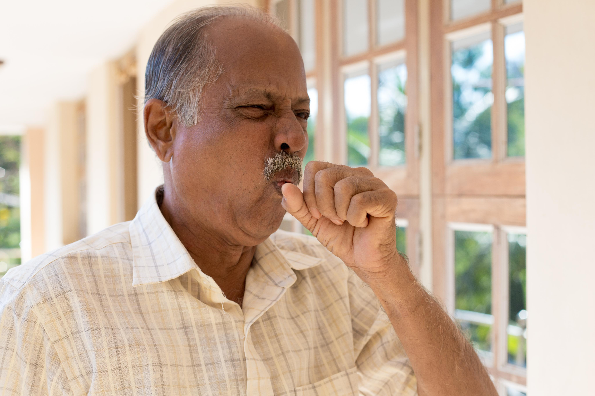
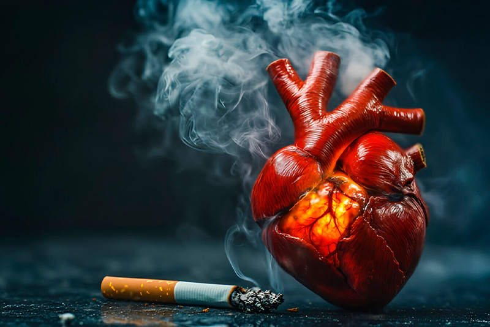
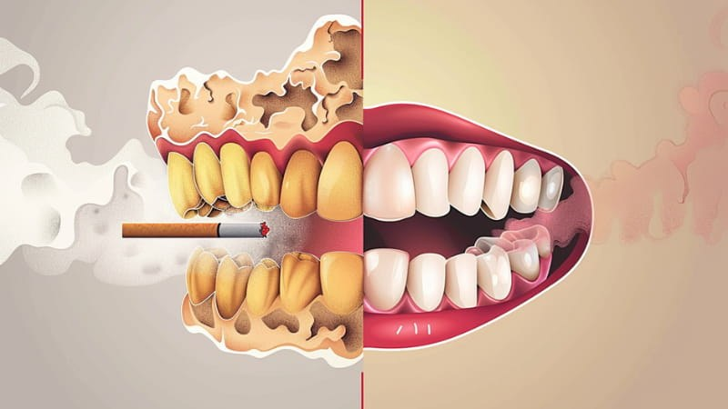
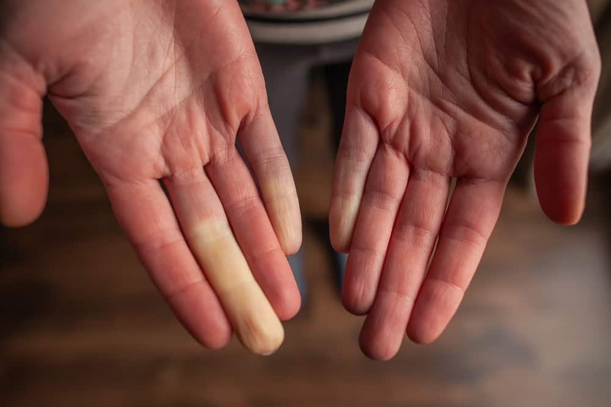

Los síntomas del tabaquismo abarcan dependencia física y psicológica (ansiedad, irritabilidad, deseos intensos de nicotina, insomnio, dificultad para concentrarse). Fumar crónicamente provoca tos, infecciones respiratorias frecuentes (bronquitis), fatiga, mal aliento, reducción del sentido del gusto/olfato, y riesgo de enfermedades cardiovasculares y cáncer.
Los síntomas pueden ser inmediatos o a largo plazo:
Respiratorios: Tos crónica, falta de aire (disnea), fatiga al caminar y aumento de flemas.
Físicos visibles: Dientes amarillos, mal aliento (halitosis), envejecimiento prematuro de la piel y olor a tabaco en cabello/ropa.
Síndrome de abstinencia: Irritabilidad, ansiedad y dificultad para concentrarse cuando no se puede fumar.

Síntomas de la adicción (Dependencia a la nicotina):
Deseo vehemente: Necesidad irresistible de consumir tabaco.
Cambios de humor: Ansiedad, tensión, irritabilidad, depresión o frustración.

Alteraciones físicas: Dolores de cabeza, insomnio, somnolencia, o pesadillas.
Problemas digestivos: Aumento del apetito y aumento de peso.
Cambios físicos: Mayor tendencia al estreñimiento.
Sistema respiratorio: Tos crónica, bronquitis, mayor riesgo de EPOC.

Sistema cardiovascular: Aumento temporal de la presión arterial, mala circulación, riesgo de infartos.

Salud bucal: Enfermedades de las encías (periodontitis), mal aliento, pérdida de dientes.

Apariencia: Envejecimiento prematuro de la piel.
